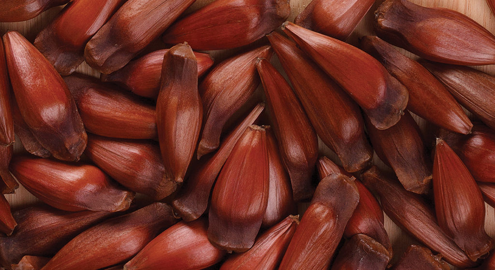
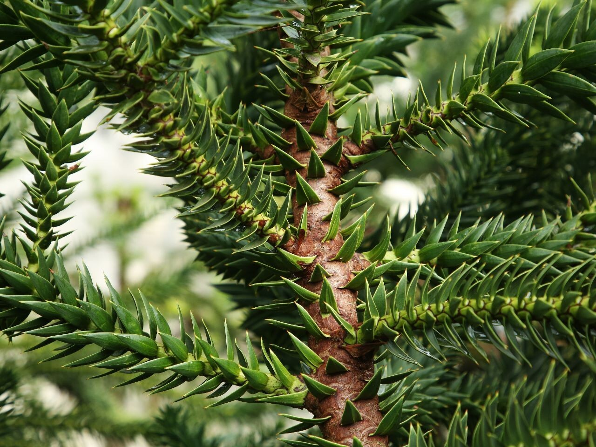
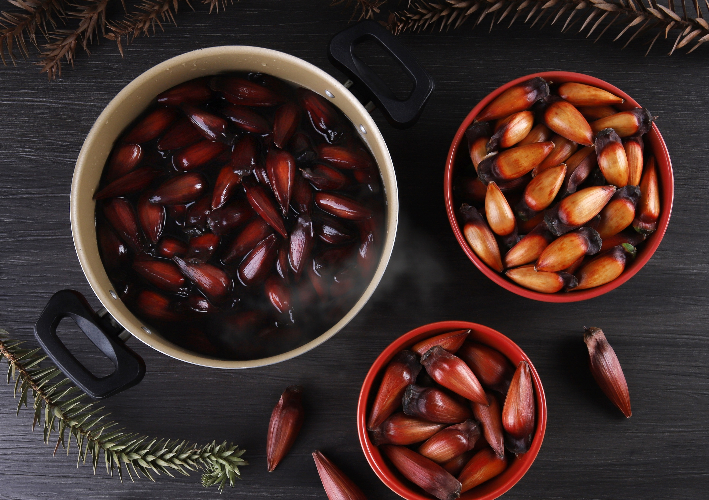
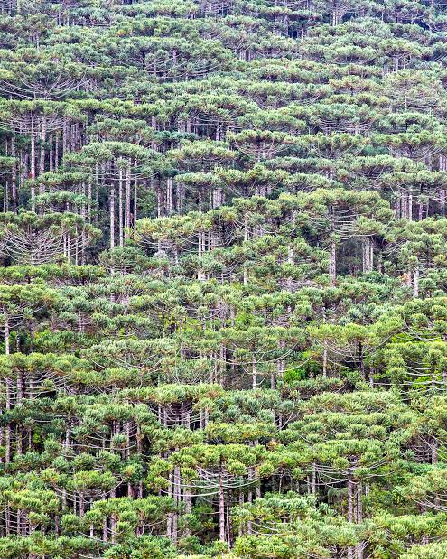
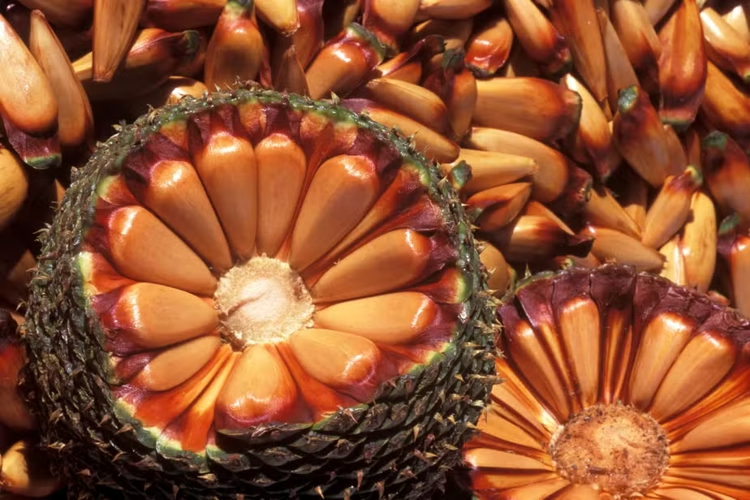
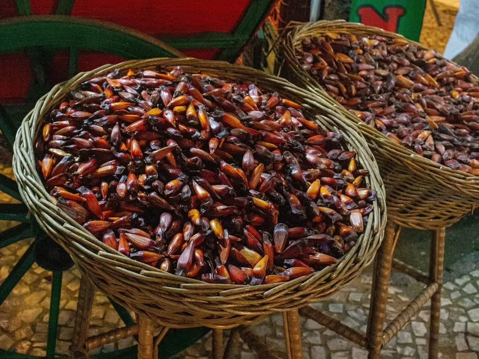

SOBRE O PINHÃO
O PINHÃO É A SEMENTE DA ARAUCÁRIA, ÁRVORE SÍMBOLO DO SUL DO BRASIL. TRADICIONAL NO INVERNO E RICO EM NUTRIENTES, ELE É PLANTADO PELA GRALHA-AZUL, TEM COLHEITA LIBERADA EM ABRIL E É CONSUMIDO COZIDO, ASSADO OU EM PRATOS TÍPICOS.
SEU CONSUMO É MUITO COMUM DURANTE O OUTONO E O INVERNO, PRINCIPALMENTE NOS MESES MAIS FRIOS DO ANO. O PINHÃO PODE SER PREPARADO COZIDO, ASSADO OU UTILIZADO EM DIFERENTES RECEITAS DA CULINÁRIA REGIONAL .
ALÉM DE SER UM ALIMENTO, O PINHÃO REPRESENTA UMA PARTE IMPORTANTE DA IDENTIDADE DO PARANÁ. ELE ESTÁ PRESENTE EM FESTAS POPULARES, ENCONTROS FAMILIARES E TRADIÇÕES QUE PASSAM DE GERAÇÃO PARA GERAÇÃO.

HISTÓRIA E ORIGEM
O PINHÃO FAZ PARTE DA ALIMENTAÇÃO E DA HISTÓRIA DOS POVOS QUE HABITAVAM O TERRITÓRIO PARANAENSE MUITO ANTES DA FORMAÇÃO DAS CIDADES ATUAIS. POVOS INDÍGENAS, ESPECIALMENTE OS LIGADOS À REGIÃO DAS ARAUCÁRIAS, UTILIZAVAM ESSA SEMENTE COMO FONTE DE ALIMENTO.
A ARAUCÁRIA, TAMBÉM CONHECIDA COMO PINHEIRO-DO-PARANÁ, ERA MUITO PRESENTE NAS PAISAGENS DO ESTADO. SEUS FRUTOS FORNECIAM PINHÕES, QUE ERAM COLETADOS E PREPARADOS DE DIFERENTES MANEIRAS.
COM O PASSAR DO TEMPO, O CONSUMO DO PINHÃO CONTINUOU FAZENDO PARTE DOS COSTUMES DA POPULAÇÃO. A TRADIÇÃO FOI TRANSMITIDA ENTRE FAMÍLIAS E COMUNIDADES, TORNANDO-SE UMA CARACTERÍSTICA DA CULTURA REGIONAL.
ATUALMENTE, O PINHÃO É CONHECIDO EM VÁRIAS REGIÕES DO BRASIL, MAS MANTÉM UMA LIGAÇÃO ESPECIAL COM A HISTÓRIA, A NATUREZA E A IDENTIDADE DO PARANÁ.

IMPORTÂNCIA ARTÍSTICA E CULTURAL
O PINHÃO POSSUI GRANDE IMPORTÂNCIA PARA A CULTURA PARANAENSE. ELE REPRESENTA OS COSTUMES, A ALIMENTAÇÃO E A RELAÇÃO DAS PESSOAS COM A NATUREZA.
NA CULINÁRIA, O PINHÃO É UTILIZADO EM PRATOS TRADICIONAIS, COMO FAROFAS, SOPAS, PAÇOCAS E OUTRAS RECEITAS TÍPICAS. SEU SABOR FAZ PARTE DA IDENTIDADE GASTRONÔMICA DO PARANÁ.
O PINHÃO TAMBÉM APARECE EM FESTAS, FEIRAS E EVENTOS CULTURAIS. UM EXEMPLO É A FESTA NACIONAL DO PINHÃO, REALIZADA EM LAGES, SANTA CATARINA, QUE VALORIZA ESSE ALIMENTO E AS TRADIÇÕES DA REGIÃO SUL.
A ARAUCÁRIA E O PINHÃO TAMBÉM INSPIRAM FOTOGRAFIAS, PINTURAS, ARTESANATOS, DESENHOS E OUTRAS MANIFESTAÇÕES ARTÍSTICAS QUE REPRESENTAM A NATUREZA E A CULTURA REGIONAL.

Curiosidades
De onde vem o pinhão?
O pinhão é a semente produzida pela araucária, árvore conhecida como pinheiro-do-paraná.
Quando é consumido?
Seu consumo é muito comum durante o outono e o inverno, principalmente nos dias frios.
Como pode ser preparado?
Pode ser cozido ou assado e também utilizado em diversas receitas, como farofas e sopas.
Qual é a árvore do pinhão?
A araucária é a árvore responsável pela produção dos pinhões e é um dos símbolos naturais do Paraná.
O pinhão é nutritivo?
Sim. Ele contém carboidratos, fibras e minerais, sendo um alimento energético.
Memória e Patrimônio
O pinhão faz parte da memória e do patrimônio cultural do Paraná. Sua história está relacionada aos povos indígenas, às comunidades tradicionais e aos costumes das famílias paranaenses.
A araucária também possui grande importância ambiental. Ela faz parte da Floresta com Araucárias, um ecossistema característico do Sul do Brasil que precisa ser preservado.
As tradições relacionadas ao pinhão ajudam a manter viva a cultura regional. Receitas, festas, histórias e lembranças familiares mostram como esse alimento continua presente na vida das pessoas.
Preservar as araucárias significa proteger a natureza, a biodiversidade e também uma parte importante da identidade cultural paranaense.


